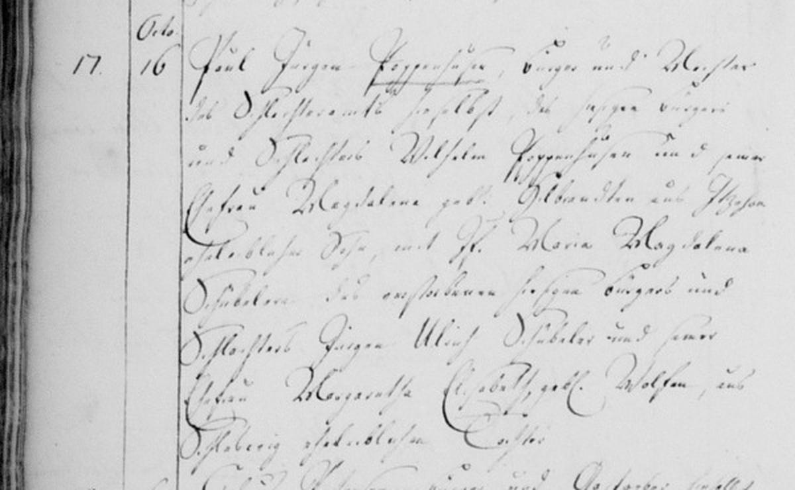
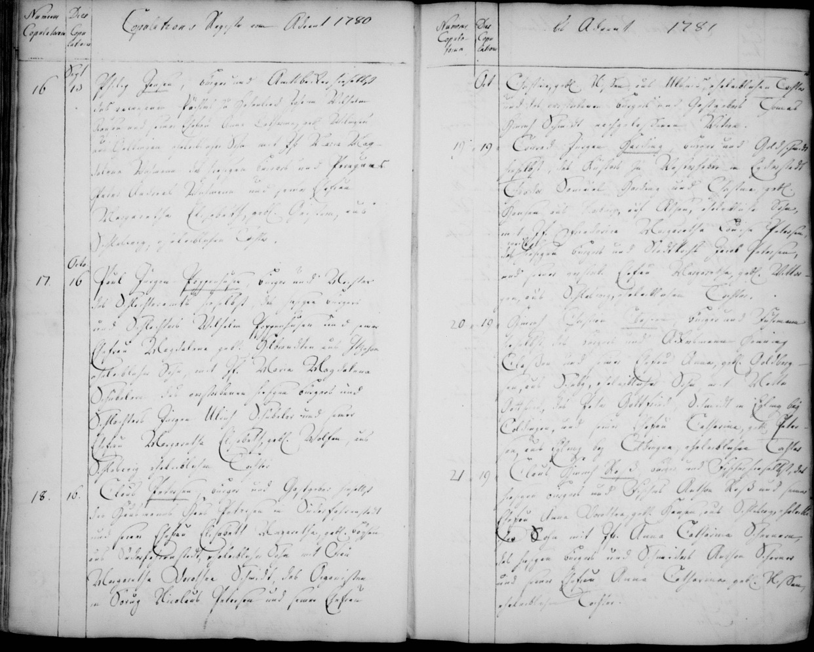

Schleswig-Domgemeinde · 16 October 1781 · Entry #17
| Groom | Paul Jürgen Poppenhusen, Bürger und Meister des Schlachteramts |
| Groom's Parents | Wilhelm Poppenhusen (Bürger & Schlachter) & Magdalena geb. Oldörpen |
| Bride | Maria Magdalena Dibbern, Jungfrau |
| Bride's Parents | Jürgen Ulrich Dibbern (dec. Bürger & Schlachter) & Margaretha Elisabeth geb. Wolfen |
| Source | Vol 274929 (Trauungen 1755-1851), Page 45 |

